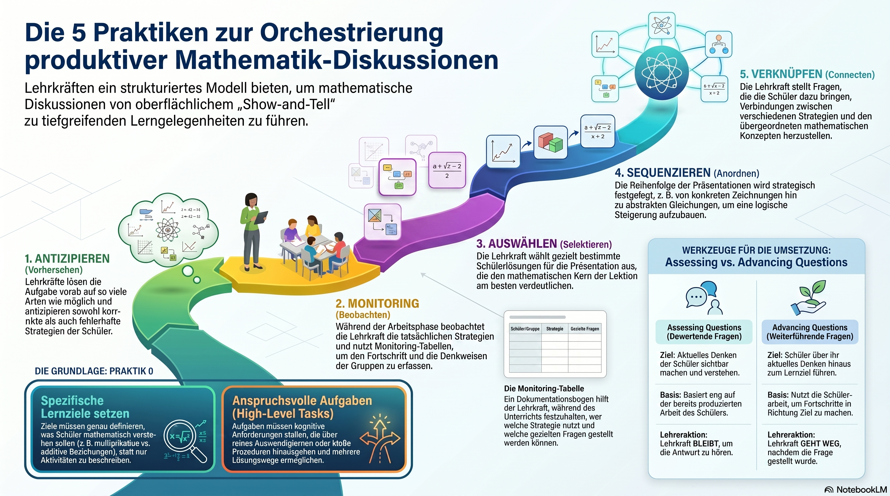

Schluss mit „Show-and-Tell":
Wie Sie mathematische Diskussionen souverän orchestrieren
Ein evidenzbasierter Fahrplan, der die Entscheidungslast aus der improvisierten Unterrichtssituation in die Planungsphase verlagert – damit Schülerinnen und Schüler „Autoren" ihrer Ideen bleiben und Sie sie dennoch zur mathematischen Tiefe führen.
Die fünf Praktiken im Überblick
Vom oberflächlichen Vergleichen hin zu tiefen Lerngelegenheiten – fünf aufeinander aufbauende Schritte.

Kurzfassung der fünf Schritte
Antizipieren
Die Aufgabe vorab auf so viele Arten wie möglich selbst lösen und korrekte wie fehlerhafte Strategien vorhersehen.
Monitoring
Während der Arbeitsphase die tatsächlichen Strategien erfassen – mit dem Monitoring-Chart als Werkzeug.
Auswählen
Gezielt jene Lösungen für die Präsentation wählen, die den mathematischen Kern am besten verdeutlichen.
Sequenzieren
Die Reihenfolge strategisch festlegen – z. B. vom Konkreten zum Abstrakten – um eine logische Steigerung aufzubauen.
Verknüpfen
Fragen stellen, die Verbindungen zwischen den Strategien und zum übergeordneten Konzept herstellen.
Video-Überblick: „Die 5 Praktiken" – kompakte Einführung in das Modell von der Anspannung der offenen Phase bis zur gekonnten Improvisation (ca. 9 Min.).
1. Einleitung: Das Dilemma der „offenen" Unterrichtsphase
Für viele Referendarinnen und Referendare ist die Phase der Unterrichtsdiskussion nach einer offenen Erarbeitung ein Moment höchster Anspannung. Es herrscht die berechtigte Sorge vor zwei Extremszenarien: Entweder versinkt die Stunde im Chaos, weil die Schülerbeiträge scheinbar ungefiltert aufeinanderprallen, oder die Phase erstarrt zu einer bloßen Ergebnisschau – dem sogenannten „Show-and-Tell". Hierbei werden Lösungen nacheinander präsentiert, ohne dass ein roter Faden oder ein echter mathematischer Erkenntnisgewinn sichtbar wird.
Die Kernfrage für jede Lehrprobe und jeden Unterrichtsbesuch lautet: Wie schafft man den Spagat zwischen der Autonomie der Lernenden und der fachlichen Stringenz? Wie moderiert man so, dass die Schülerinnen und Schüler „Autoren" ihrer Ideen bleiben, wir sie aber gleichzeitig zur mathematischen Tiefe führen? Smith und Stein beschreiben dies als die Suche nach der richtigen Balance: Zu viel Fokus auf Kontrolle untergräbt das Sense-Making der Lernenden; zu viel Fokus auf die Autorenschaft der Schüler führt zu einem „free-for-all". Die Lösung liegt nicht in der spontanen Genialität während der Stunde, sondern in einer systematischen Vorbereitung. Die „5 Practices" (Fünf Praktiken) bieten hierfür einen evidenzbasierten Fahrplan, der die Entscheidungslast von der improvisierten Situation im Klassenzimmer in die Planungsphase verlagert.
Takeaway 1Warum „Show-and-Tell" eine Sackgasse ist
Smith und Stein eröffnen ihr Buch mit einem Fallbeispiel – dem (fiktiven, aber
typischen) Lehrer David Crane. Sein Fall ist eine klassische Warnung für die Fachleitung.
Crane ließ seine Klasse die „Leaves and Caterpillars"-Aufgabe bearbeiten, eine Aufgabe zum
proportionalen Denken: Wenn 2 Raupen 5 Blätter fressen, wie viele Blätter brauchen dann 12 Raupen?
Der Sprung von 2 auf 12 verlangt eine Multiplikation mit 6 (also 30 Blätter) – nicht das naheliegende, aber
falsche Addieren von 10 (das ergäbe 15). Am Ende ließ Crane mehrere richtige Schülerwege nacheinander
vorstellen und moderierte freundlich, filterte die mathematischen Ideen aber nicht. Das Ergebnis war eine
Diskussion, die das Buch als „unmoored" (losgelöst) beschreibt:
„In diesen Show-and-Tells folgte eine Schülerpräsentation auf die nächste, mit begrenztem Kommentar der Lehrkraft (oder der Schüler) und ohne Unterstützung dabei, Verbindungen zwischen den Methoden herzustellen oder sie mit allgemein geteilten disziplinären Methoden und Konzepten zu verknüpfen." — Smith & Stein, 5 Practices for Orchestrating Productive Mathematics Discussions
Die Gefahr: Wenn die Lehrkraft die fachliche Agenda vollständig abgibt und alle Strategien als „gleichwertig" nebeneinanderstehen lässt, bleibt der Lernzuwachs zufällig. In Cranes Fall verpasste er die Gelegenheit, die fundamentale Unterscheidung zwischen additivem und multiplikativem Denken (proportionale Zusammenhänge) herauszuarbeiten. Eine bloße Sammlung von Wegen ist noch kein Mathematikunterricht; erst die fachliche Orchestrierung macht daraus eine Lerngelegenheit.
Takeaway 2„Praxis 0" – Ziele und Aufgaben als Fundament
Bevor Sie mit den fünf Praktiken beginnen, müssen Sie „Praxis 0" beherrschen: ein klares, spezifisches Ziel für die Stunde und eine Aufgabe, die dieses Ziel trägt. Je genauer Sie wissen, worauf die Diskussion hinauslaufen soll, desto gezielter können Sie später auswählen, anordnen und verbinden.
Wie ein tragfähiges Ziel präzise und überprüfbar formuliert wird, ist ein Thema für sich – dazu gibt es eine eigene Handreichung zur Zielformulierung. Für die Plenumsbesprechung genügt: Das Ziel muss hinreichend spezifisch sein (also nicht bloß „die SuS beschäftigen sich mit Proportionalität"), damit es Ihre Entscheidungen beim Auswählen, Anordnen und Verbinden überhaupt steuern kann.
Den Ausschlag für die Diskussion gibt die Aufgabe. Eine kognitiv aktivierende Diskussion braucht „High-Level Tasks": Aufgaben mit mehreren Lösungswegen, die zum Entdecken, Begründen und Verallgemeinern auffordern. Eine reine Verfahrensaufgabe („Berechne 30 % von 45 €") trägt keine Diskussion; eine Aufgabe wie „Finde eine Regel und begründe, warum sie immer gilt" schon. Nutzen Sie das Prinzip des „Algebrafying": Transformieren Sie Schulbuchaufgaben mit Einzellösungen in Aufgaben, die Musterbildung und Begründungen erfordern – also „Doing Mathematics" statt „Procedures without Connections".
Takeaway 3Antizipieren ist kein Raten, sondern Ihre Versicherung
Die erste Praxis, das Anticipating, ist Ihre persönliche „Versicherungspolice" gegen den Blackout während der Diskussion. Es bedeutet nicht, zu raten, was Schüler tun könnten, sondern die Aufgabe selbst auf jede erdenkliche Weise zu lösen.
Ein Beispiel aus dem Buch ist die „Max's Dog Food"-Aufgabe – eine Textaufgabe zur Bruchdivision (sinngemäß: Wie viele Portionen von ¾ Dose lassen sich aus einer bestimmten Futtermenge abfüllen?). Sie müssen vorhersehen, ob Ihre Schülerinnen und Schüler rein prozedural vorgehen („mit dem Kehrwert multiplizieren") oder konzeptuell (durch wiederholtes Abziehen oder eine Zeichnung). Wenn Sie im Vorfeld die typischen Fehlkonzepte durchspielen – etwa den verbleibenden Rest falsch zu deuten –, sinkt Ihre Improvisationslast massiv. Sie reagieren in der Stunde nicht mehr überrascht, sondern erkennen Schülerlösungen als Bausteine Ihrer geplanten „mathematischen Geschichte" wieder.
Takeaway 4Die Kunst des Monitoring, Selecting und Sequencing
Während der Arbeitsphase sind Sie kein passiver Beobachter. Sie nutzen ein Monitoring Chart – ein einfaches, aber zentrales Werkzeug mit drei Spalten:
| Antizipierte Strategie | Gezielte Fragen | Tracking / Reihenfolge |
|---|---|---|
| Welche Gruppe nutzt welchen Weg? | Welche Frage stelle ich dieser Gruppe? | Wer präsentiert in welcher Reihenfolge? |
Hierbei unterscheiden wir zwei Arten von Fragen, deren Wirkung sich grundlegend unterscheidet:
Assessing Questions
- Ziel
- Das aktuelle Denken der Schüler sichtbar machen und verstehen, was sie bereits getan haben.
- Basis
- Beziehen sich eng auf die bereits produzierte Arbeit des Schülers.
- Lehreraktion
- Die Lehrkraft bleibt stehen, um die Antwort zu hören.
Advancing Questions
- Ziel
- Die Schüler über ihren aktuellen Stand hinaus zum nächsten Schritt Richtung Lernziel führen.
- Basis
- Nutzen die Schülerarbeit als Sprungbrett für Fortschritt.
- Lehreraktion
- Die Lehrkraft geht weg, nachdem die Frage gestellt wurde – für Denkzeit.
Beim Selecting & Sequencing entscheiden Sie strategisch: Nicht jeder muss präsentieren! Ein zweites Fallbeispiel aus dem Buch zeigt das. Die Lehrerin Darcy Dunn ließ ihre Klasse ein Wachstumsmuster untersuchen – eine Figurenfolge, bei der von Schritt zu Schritt zwei Plättchen hinzukommen und die sich durch die Gleichung y = 2x + 6 beschreiben lässt. Aus den Lösungen ihrer Schülerinnen und Schüler wählte sie Beth, Faith und Devon gezielt aus. Der entscheidende Kniff aber war Tamika: Obwohl Tamikas Wertetabelle keine „neue" Lösung war, wählte Darcy Dunn sie als Brücke, um die konstante Änderungsrate (+2) sichtbar zu machen. Die Reihenfolge – vom Konkreten zum Abstrakten – baut die Spannung auf, bis die mathematische Essenz für alle greifbar wird.
Takeaway 5Den Sack zumachen – die Kraft des „Connecting"
Die schwierigste Praxis ist das Connecting. Hier wird das „Show-and-Tell" endgültig überwunden, indem die Mathematik explizit gemacht wird. Es geht nicht mehr um das „Wie hast du es gemacht?", sondern um das „Warum hängen diese Wege zusammen?".
Bleiben wir bei Darcy Dunns Muster-Aufgabe. Ein starkes Beispiel für Verbindungen: Lassen Sie die Schülerinnen und Schüler die +2 (den Zuwachs pro Schritt) an verschiedenen Stellen wiederfinden:
„Wo finden wir die +2 in Beths Zeichnung?" — zwei neue Fliesen pro Schritt.
„Wo sehen wir diese +2 in Tamikas Tabelle?" — als Differenz der Funktionswerte.
„Wo taucht diese 2 in der Gleichung y = 2x + 6 auf?" — als Steigungsfaktor.
Das Ziel ist es, separate Präsentationen in eine kohärente mathematische Idee zu verwandeln. Nur wenn diese Verbindungen explizit ausgesprochen und von den Schülern reflektiert werden, ist die Diskussion erfolgreich.
Fazit: Vom Moderator zum Dirigenten
Die 5 Praktiken ermöglichen Ihnen eine „gekonnte Improvisation". Indem Sie die Entscheidungslast in die Planung verschieben, gewinnen Sie die Freiheit, im Unterricht wirklich auf Ihre Schülerinnen und Schüler einzugehen, ohne den fachlichen Kompass zu verlieren. Sie moderieren nicht nur einen Austausch – Sie dirigieren ein mathematisches Orchester.
Reflexionsfrage für Ihre nächste Planung
Welche Ihrer nächsten Unterrichtsstunden bietet das Potenzial, nicht nur Ergebnisse zu vergleichen, sondern durch gezieltes Connecting echte mathematische Durchbrüche zu erzielen? Und welches Werkzeug – etwa ein Monitoring Chart – wird Ihnen dabei die nötige Sicherheit geben?